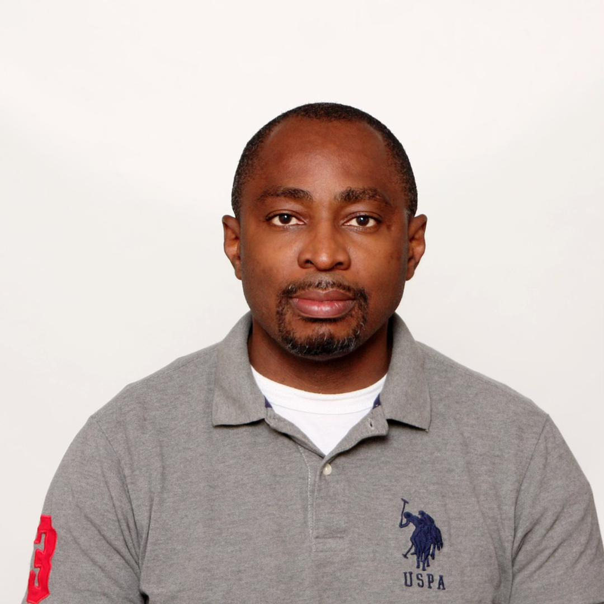

Edwin Okoronkwo Homepage
Summary about myself

I am a student enrolled in the Software Engineering Technician
program, code 3468.
I have Masters degrees in Chemical Engineering, Petroleum
Engineering and Logistics and have over 18 years work experience in
the Oil & Gas Industry.
I recently completed the Meta Backend Developer certificate
program.
I am married with two children, a boy and a girl. I lived in Edmonton, Canada with my lovely wife and amazing kids.
My Hobbies
One of my favorite quotes is:
Develop a passion for learning. If you do, you will never cease to grow.
~~~~~~~~~Anthony J.D'Angelo~~~~~~~~
Here are some of my favorite things to do:
- Learning to code: I enjoy watching videos on programming and reading programming books. Some of the programming languages I enjoy learning are Java, Python, JavaScript, C++. I am looking forward to mastering these languages.
- Playing tennis: My favorite tennis star is Rafael Nadal
- Watching Formula-1: I have been watching formula-1 now for over 30 years. It is definitely my number one sport. My favorite formula-1 driver is Lewis Hamilton. It used to be a fan of Damon Hill, David Coulthard in the past.
- Reading Russian Classical novels: I enjoy reading books by Dostoyevsky and Tolsltoi. "Crime and Punishment" and "War and Peace" are some of my favorite books.
- Travelling: I enjoy travelling by air, road, train etc. I feel very much at home in airports and train stations. Watching TV or working on my computer in long haul flights is something I enjoy doing. I always make sure to watch a John Wick movie whenever I am in a plane. I also enjoy driving. I remember once I flew to London Heathrow and rented a BMW 5- ® and drove all the way to Aberdeen (just for the fun of it!!). My favorite car is Audi-A4 ®.
- Fitness: I enjoy running, cycling, lifting weights. I am happiest when I make fitness part of my daily routine.
Countries lived and worked in
Below are the countries I have lived, worked or studied in:
-
Nigeria
- I was born in Kaduna, a city in the North of Nigeria. I attended primary school in Lagos, Nigeria and secondary school in Port Harcourt. I started my working career in Nigeria.
-
Belarus
- Lived for 6 years in Novopolotsk Belarus (1991 to 1997) while studying Chemical engineering in Polotsk State University.
-
United Kingdom
- Lived for over a year in Edinburgh and Aberdeen, Scotland, United Kingdom while studying a Masters degree program in Petroleum Engineering (2008 to 2009) in Heriot-Watt University. I met my wife in Edinburgh.
-
South Africa
- Lived in the lovely city of Cape Town (2010 to 2014) while working as a Technical Sales Engineer for an Oil & Gas Service company. I had the opportunity of travelling to several countries in Sub Sahara Africa during this period.
-
Angola
- I lived in Luanda, Angola for 2 years (2015 to 2016) while working as Technical Sales Manager for an Oil & Gas Service company.
-
Norway
- I lived in Molde, Norway for 2 years (2017 to 2018) while studying a Masters degree program in Logistics in Molde University College. I was there with my family. My wife was also studying in the same university
-
Senegal
- I worked for 2 years in Senegal (2021 to 2023) as a Project Coordinator for an Oil & Gas service company. I was working on a 5 week rotation.
-
Canada
- I have been living in Edmonton, Canada for 4 years now (2019 to date). I am currently studying at Centennial College Scarborough- where I belong, to become a Software Developer.